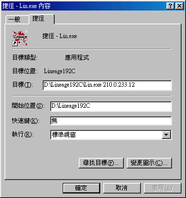

2003年2月26日 台灣伺服器3月5日改版來源：遊戲基地 《天堂冰鏡湖》2/27上市 《天堂之冰鏡湖》1.93c版飄洋破冰包預計在2月27日全省的全家、OK便利店、萊爾富、福客多、中日、每一日、蜜鄰、大眾玫瑰、光南、百事達、3C賣場、書局全部同步上市，產品內容有：最新的《天堂冰鏡湖》1.93c版遊戲光碟、GASH儲值點數卡50點、遊戲改版說明書，售價129元。 遊戲橘子表示，此次改版的重點是遊戲中多了一個被遺忘千年的『遺忘之島』，因為這個島嶼上的怪物都非常的強，所以想要到這個島嶼的玩家必須要達到45級以上，不僅如此，玩家一但進入這個島嶼若要離開並非一件簡單的事情，在島嶼上負責把玩家傳送走的傳送師會不定時、不定點的移動，想要找到傳送師活著離開『遺忘之島』，玩家們勢必要保留點真實力。 除此之外，這一次1.93c版還開放了四種職業30級的試煉：玩家要先通過15級的試煉才可以進行30級的試煉，30級的試煉過程跟以往比起來複雜也困難許多，著實考驗了玩家們的細心、耐力以及毅力。 1.93C版遺忘之島在3月5日會正式改版，在改版當天還特地舉辦了改版活動，遊戲中會開放前所未有的幻象武器讓所有玩家體驗。
香港伺服器寵物1/8傷害設定 今天香港伺服器更新了寵物1/8傷害的設定，經過初步測試，不論是在戰鬥區域，普通區域或紫名的狀態下，寵物攻擊玩家及玩家攻擊寵物的傷害都只有原來的1/8，而寵物攻擊寵物或寵物攻擊怪物則維持不變。
香港伺服器不能登入的解決方法 香港伺服器今天更換了網路供應商，由原先的PowerNetIX轉換到Hutchison Telecommunications，此包括遊戲網站及遊戲伺服器，但大家的ISP DNS記錄更新需時（約需24-48小時），因此大家未必能夠在轉移伺服器後便即時登入，暫時最安全的解決方法如下： 將天堂目錄下的Lin.bin複製為另一.exe檔尾的檔案（例如Lin.exe，沒錯Lin.bin是一個執行檔），假如你看不到檔尾的話請在在選項-> 資料夾選項-> 檢視-> 隱藏已知檔案的副檔名的方格打空白。 然後便加入執行該.exe檔案的捷徑，在捷徑的目標後加上伺服器的新IP位置，香港太陽神為210.0.233.12，香港愛神為210.0.233.22。例如你想連往香港太陽神的話，捷徑內容如下：  其後你便可以不用更新，直接連往伺服器中，（在登入帳號後可能會出見選擇伺服器視窗）。但緊記在日後DNS記錄更新後要用回正常的途徑登入天堂，否則你會收不到更新檔。
美國測試伺服器2月24日更新內容 原文：美國天堂官方網站 1. 修正了妖精妖精魔法生命之泉的延遲錯誤。
2. 重新分佈肯特城堡內的武器及防具強化師的位置。
3. 玩家不能再帶寵物上遺忘之島的船上。
4. 開放了王族45級任務及聯盟系統。 |